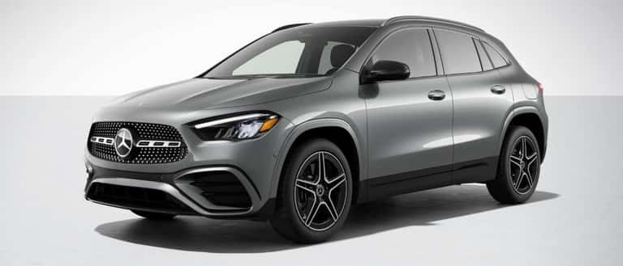
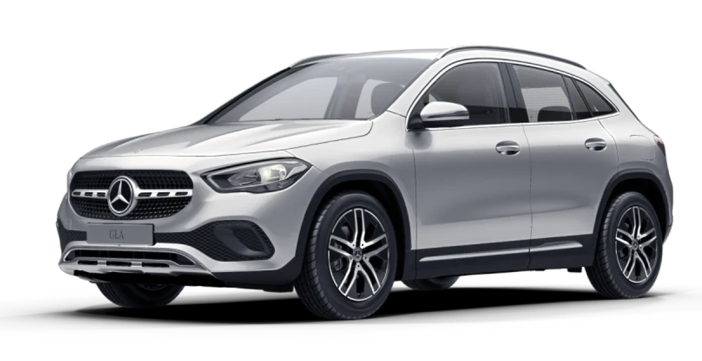
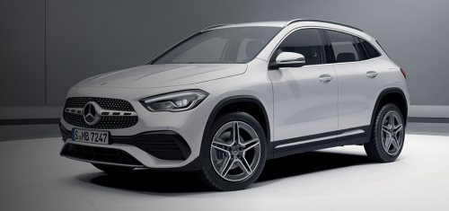

MERCEDES-BENZ
Mercedes-Benz GLA
جميع نسخ مرسيدس GLA مع المواصفات الرسمية مرتبة في صفحة واحدة، لتسهيل المقارنة بين جميع الإصدارات.
جميع نسخ مرسيدس GLA مع المواصفات الرسمية مرتبة في صفحة واحدة، لتسهيل المقارنة بين جميع الإصدارات.

| المحرك | 1.3 لتر تيربو |
| عدد الأسطوانات | 4 |
| القوة | 136 حصان |
| عزم الدوران | 230 نيوتن متر |
| ناقل الحركة | 7G-DCT |
| نظام الدفع | دفع أمامي |
| التسارع (0-100) | 9.0 ثانية |
| السرعة القصوى | 200 كم/س |
| عدد المقاعد | 5 |
| نوع الوقود | بنزين |
| المحرك | 1.3 لتر تيربو + نظام هجين خفيف |
| عدد الأسطوانات | 4 |
| القوة | 163 حصان |
| عزم الدوران | 270 نيوتن متر |
| ناقل الحركة | 7G-DCT |
| نظام الدفع | دفع أمامي |
| التسارع (0-100) | 8.7 ثانية |
| السرعة القصوى | 210 كم/س |
| عدد المقاعد | 5 |
| نوع الوقود | بنزين |

| المحرك | 2.0 لتر تيربو |
| عدد الأسطوانات | 4 |
| القوة | 190 حصان |
| عزم الدوران | 300 نيوتن متر |
| ناقل الحركة | 8G-DCT |
| نظام الدفع | 4MATIC |
| التسارع (0-100) | 7.1 ثانية |
| السرعة القصوى | 219 كم/س |
| عدد المقاعد | 5 |
| نوع الوقود | بنزين |

| المحرك | 2.0 لتر تيربو |
| عدد الأسطوانات | 4 |
| القوة | 224 حصان |
| عزم الدوران | 350 نيوتن متر |
| ناقل الحركة | 8G-DCT |
| نظام الدفع | 4MATIC |
| التسارع (0-100) | 6.8 ثانية |
| السرعة القصوى | 240 كم/س |
| عدد المقاعد | 5 |
| نوع الوقود | بنزين |

| المحرك | 2.0 لتر تيربو |
| عدد الأسطوانات | 4 |
| القوة | 306 حصان |
| عزم الدوران | 400 نيوتن متر |
| ناقل الحركة | AMG SPEEDSHIFT DCT 8G |
| نظام الدفع | AMG Performance 4MATIC |
| التسارع (0-100) | 5.2 ثانية |
| السرعة القصوى | 250 كم/س |
| عدد المقاعد | 5 |
| نوع الوقود | بنزين |

| المحرك | 2.0 لتر تيربو |
| عدد الأسطوانات | 4 |
| القوة | 421 حصان |
| عزم الدوران | 500 نيوتن متر |
| ناقل الحركة | AMG SPEEDSHIFT DCT 8G |
| نظام الدفع | AMG Performance 4MATIC+ |
| التسارع (0-100) | 4.3 ثانية |
| السرعة القصوى | 270 كم/س |
| عدد المقاعد | 5 |
| نوع الوقود | بنزين |